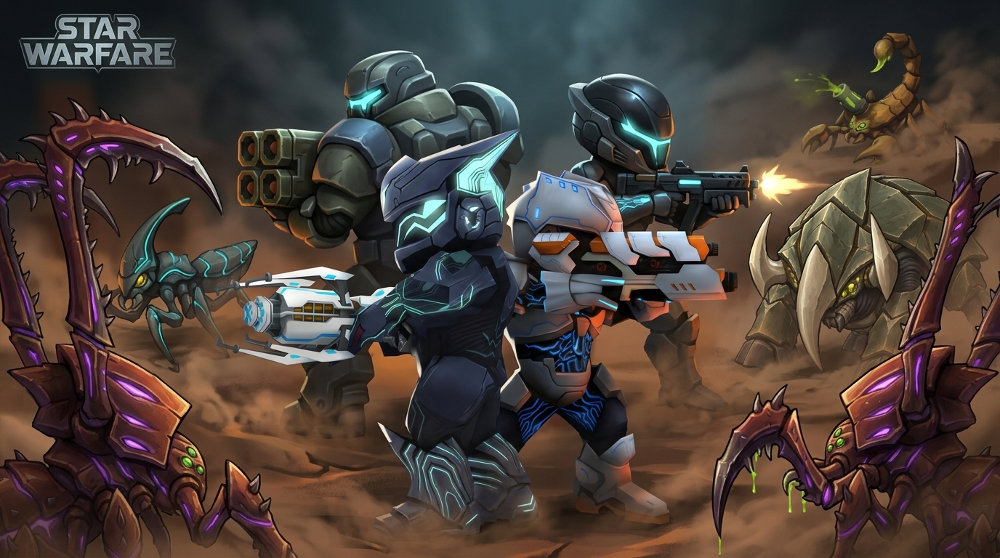
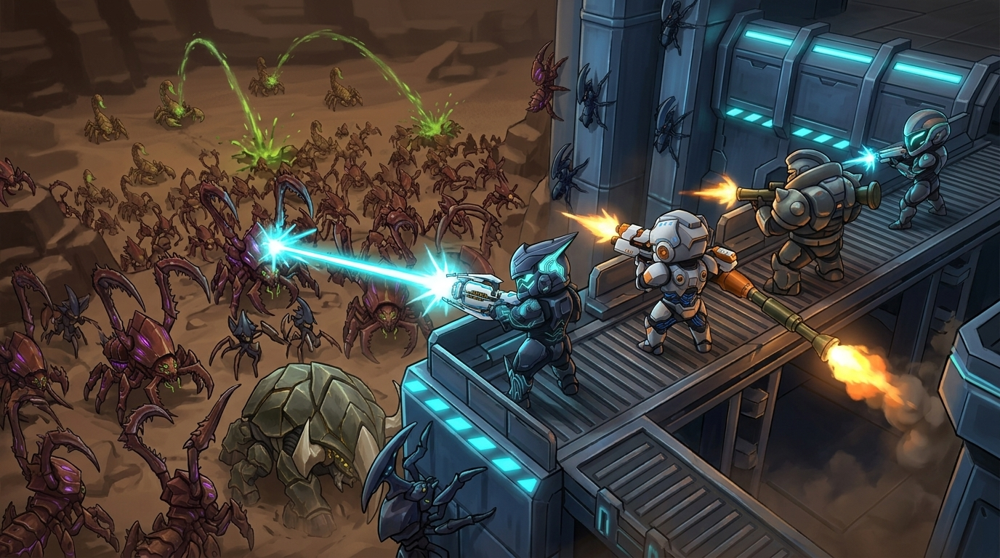

封面畫風統一 · 2026-09-21
以 menu_hero.png 為唯一畫風與整體色調基準。保留立體遊戲模型、硬面裝甲、冷青局部光、暗灰藍陰影與低彩度褐色煙塵。蟲種依指定 commit
裝甲、武器、背包皆以遊戲現有素材為參考，分開混搭；新構圖採 Fortune、Strike、Atom、Draco，背包採 ArmorBag_00／02／04／07。畫風基準不限制裝備款式。
下方提供兩張新構圖與兩張 Antigravity 原圖改造候選；原稿保留供對照。這是封面候選比較，尚未替換遊戲中的
生成提示詞、引用素材與檢查記錄
9a70bc5 的圖稿，保留各自辨識色並融入同一場景光線。裝甲、武器、背包皆以遊戲現有素材為參考，分開混搭；新構圖採 Fortune、Strike、Atom、Draco，背包採 ArmorBag_00／02／04／07。畫風基準不限制裝備款式。
下方提供兩張新構圖與兩張 Antigravity 原圖改造候選；原稿保留供對照。這是封面候選比較，尚未替換遊戲中的
menu_hero.png。生成提示詞、引用素材與檢查記錄
展開原始畫風基準：menu_hero.png

小隊死守
微仰角、四人戰術圓陣；前方兵蟲、殘骸刺客、右後方坦克蟲。

Antigravity 原圖

原構圖改造版

威士忌哨站城防
高處俯瞰城牆與蟲海；坦克蟲破門、遠山蠍尾蟲發射酸液彈。

Antigravity 原圖

原構圖改造版

原始 menu_hero.png 為 1920 × 1280（3:2）；候選採寬幅構圖。實際接入選單前仍需依介面裁切檢查。生成圖為美術候選，裝備細節與模型逐面一致性仍需人工驗收。